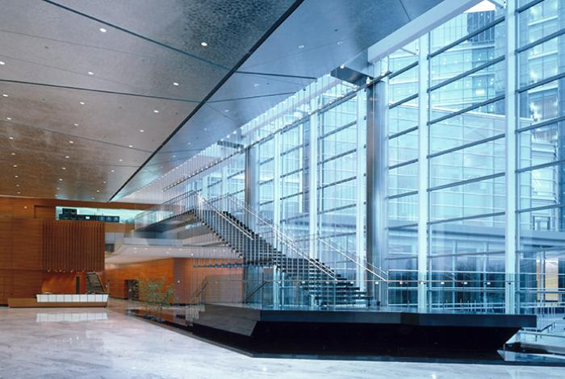

About How I got here
Virginia Tech(VT) has an amazing Computer Science program. One of the best things about VT is how they handle their career fairs. Every semester is a huge career fair with over 50+ companies eagerly looking to recruit our wonderful students. I was really interested in mobile development particularly in iOS. So i began to look through every single company one by one to see which company had a mobile developer intern position available.
I was really fortunate to come across Gannett's booth during the CSRC Career fair (https://csrc.cs.vt.edu/companies) If you are a student at Virginia Tech be sure to check out their booth! They are working on some amazing mobile applications for the web, windows, iOS, and android platforms. The products shown during the fair was what caught my attention. They were amazingly great, and I knew that this was where I wanted to spend my summer as I would get a lot of new iOS and real world programming experience that school could not teach.
So enough about me, what does Gannett do?
Not many students have heard about Gannett. When my friends asked, "Where are you interning for the summer?" I would say "Gannett", but none of them have ever heard about it before. I would then go about saying "You know USA Today?, well Gannett owns that".
Gannett is a media, marketing solutions company that works in the area of broadcasting, digital media, mobile, and publishing. Gannett aquires a lot of online websites and media content. The media content they offer are entertainment, travel, career, finance, sports, autos, and housing. With a diverse amount of data they create mobile applications for native Windows, iOS, Android devices, as well as mobile web applications.
Gannett is highly experience with mobile applications technology, and have won a couple awards for their iPhone and iPad applications
For more information you can check out this Wikipedia Page and their website:
http://en.wikipedia.org/wiki/Gannett_Digital
http://www.gannett.com/
My Team
I was on the iOS mobile team at Gannett. My team is totally funny, and has a diverse culture and skill sets. I felt really connected to my team members mainly because of three reasons. The first reason is, we all have a drive for passion to keep learning, and helping one another. They were always open to helping me improve in writing code, and had a great understanding of design patterns, and common practices to go about solving a problem. Occasionally we would go about talking about technology, iOS concepts, iOS 7, and do some pair programming to find bugs. With pair programming, it really helped me grow to see how they approached a problem. With talking about technology, it helped me expand my horizon, exploring new ways of doing things, and keep an open mind.
The second reason I was able to connect was because Gannett is hiring a lot of mobile developers. I was able to connect well with new team members joining the team because I was in the same boat, not knowing anyone! Since there was a differentiation of age groups in the team, which ranged from just out of college, to working in the field for a long time. I was able to gain valuable advice, tips to how I should pursue my Computer Science career path. Different perspectives, experience, and wisdom is always a great thing to have.
Lastly, my manager was a fellow Hokie! I didn't know that till my first day. We would sometimes talk about Virginia Tech whats still there and whats new. Since my boss was a fellow Hokie, I felt a fatherly figure training me, giving me advice, and helping me improve as an overall person, and coder. He was really awesome to work with, highly sharp, and intelligent. It was an honor being apart of a wonderful team.
I would like to thank my team members for making me laugh, for sharing and teaching me valuable skills and knowledge, and helping me improve as an overall programmer. I will remember the fun times, and will truly miss you guys.
Gannett's Work Environment
Gannett Digital's work environment is truly open. We would occassionally throw some friendly fits with the Android team sitting next to us, but everyone is really cool. Everyone is exposed to everyone. You weren't enclosed to a cubicle by yourself. You could just go to any team station and ask them stuff (when they are not busy), and they would be glad to schedule an appointment to help you. With such a palatial environment communication is great, and everyone knows each other.
My floor had a break area where you could play ping pong, fooz ball, or pool. Sometimes if you just need to take a break from what you are doing, this is where everyone hangs out. There is also a kitchen next to the break area, ocassionally with free fruits, donuts, and fast food like Popeyes, yummy.
Not forgetting. Gannett's architecture is just truly remarkable. You have to actually go to the site and see the building for yourself. I walk up the granite staircase every morning going up to where I work. The glass walls is a prestige. I'm always really excited to work at Gannett.

Image from: Clark Construction
What I did
This is my first internship and I didn't really know what to expect. One of my great mentors on my team would tell me that they didn't really expect much from an intern, just go out there and have fun and learn as much as possible. This internship is catered to help you learn.
During my internship I did four things. The first thing I did was just to ease me into the program. I created a debugging tool that captures iOS device console logs. This is useful for testers and developers to check logs on when and where the application crashes. After sucessfully pulling the console logs, I added a feature where you could send the logs by Email. My first assignment overall taught me about design decisions, where classes should go, and decisions on when it is appropriate to have controllable parameters.
The second thing I implemented was a Starwars Theme module. If you watched Starwars before you remember at the start of the movie there was this long introductory credits that would scroll from bottom to top having a slanted 3D perspective. I created something similar to this, but except you could place any text you wanted, probably now possible with text attachments with the new Text Kit stuff on iOS 7. This project gave me a glimpse at how powerful Quartz Core truly is. There is so much more to learn with Quartz framework. Some great UI designs is due to this concept.
I was fortunate during my internship because iOS 7 came at the perfect time. I was given the task of exploring different new exciting features brought to the new iOS 7. I played around with text kit, and created an article architecture that first obtains the data, and then implemented a way to structure the article from top to bottom. I also experimented a bit more with UICollectionViews, because the interface allows page scrolling. What I realized about developing iOS application is that, sometimes you have to support lower level iOS versions. Some people may still be using the old iOS 4 or iOS 5, and if they download your application it breaks because your application doesn't support older versions. This is truly a tedious and complicated task. The good news is most people are now up to iOS 5 and above. Hopefully iOS 6 and above soon.
Besides text kit, I look at the new background fetch technology, watched a ton of WWDC videos to help me understand UIDynamics, new xCode 5 capabilities (love the new TESTING FRAMEWORK! YES TO TESTING!), and guidelines to transform your iOS 6 UI to iOS 7 UI.
Intern Buddy Program
The Intern Buddy program was awesome. Basically every intern in Gannett Digital gets a buddy based on their interest. A buddy works in the same department but could range from a skilled web developer, graphic designer, or product manager. Basically from different work occupation. As I was interested in graphics designer, and so I was paired with one. During this program, we would schedule a meet up once or twice every week just to talk about stuff. This program was aimmed at helping an intern feel more comfortable with the work environment, and if you had any questions or didn't really know what to do, your buddy was the go to person for help.
Every week my buddy and I would meet up talk about design in general, how it has evolved, and tips and tricks he would use to go about doing his daily job. It was like shadowing a graphics designer, which was totally awesome! We started a design project on anything random. This was just to give me some experience on what a graphics designer would go about doing themselves. Below are some designs I created myself, with advice and knowledge imparted to me by my buddy.
List of great design websites that we occasionally share with each other. Research, and design evolution is key.
- http://www.mobile-patterns.com/
- http://speckyboy.com/
- http://www.mobileawesomeness.com/
- http://patterntap.com/
- http://www.webdesignerdepot.com/
- http://plentyofcolour.com/category/palette-of-the-week/
- http://ios7redesigns.tumblr.com/
- http://cloudcastlegroup.com/blog/basiliq
Things to Take away
Of course there may be struggles, and fustrations when you don't understand how to do something. Steve Jobs sums it pretty nicely "You have to be willing to fail, crash and burn." Everyday I come into work having a goal in mind, to learn, and have fun.
I will bring back all this knowledge of programming for my senior year at Virginia Tech. I am really excited to apply the same coding concepts, and approaches to my course assignments. Looking forward to using design patterns, modulizations, and reusuability of code. Its time to evolve!
With this internship, I am still solid and stand adamant to my decision that a career in the software industry is where I want to be. I would recommend any student to intern with Gannett. I know for sure that Gannett and their HR department is always finding ways to help improve their intern program. Gannett Interns are here to learn, and you will get a ton of that with Gannett Digital.